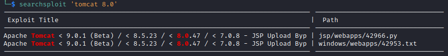
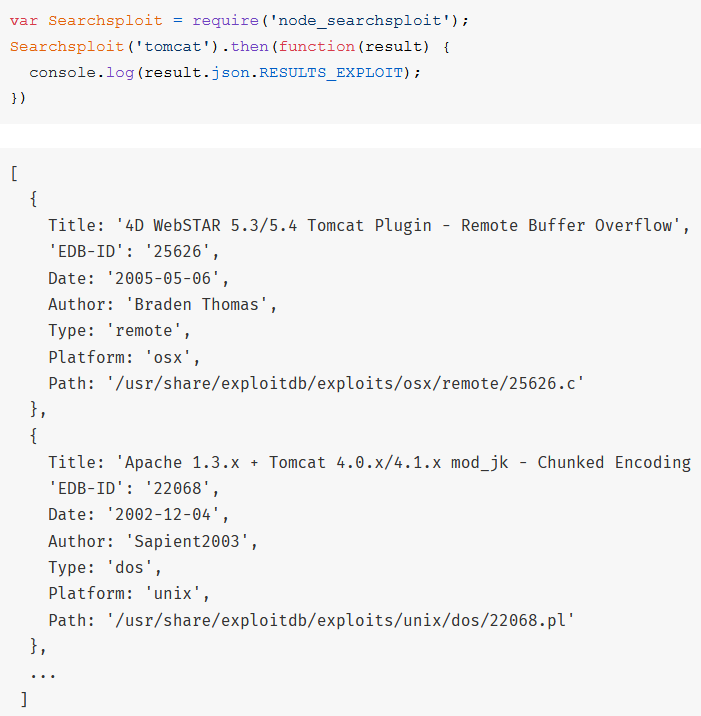

About node-searchsploit
Most offensive security operators are familiar with the
popular ethical hacking utility Searchsploit. Searchsploit is a command-line program that can be used to search a local copy of
exploitdb, the world's largest repository for public exploit code. Searchsploit is most commonly used as a means of identifying whether or not there exists a public exploit for a specific software version. For example, below, an operator finds a public exploit for some variants of Apache Tomcat 8.
That brings us to
node-searchsploit. node-searchsploit is a nodejs package that wraps your local copy of Searchsploit, enabling nodejs programmers to conveniently execute and obtain results from Searchsploit within their nodejs programs.
For an example using ye-olde .then()-based functional JavaScript, you can do something like this, and easily obtain a JSON object full of Searchsploit results:
There isn't a whole lot more to say about node-searchsploit. I don't think it's revelatory, but it is convenient. It was created to serve a single use case for me during a security research project, and I figured if it helps even one other person out there, it's worth it to publish.
Node is an underutilized environment for security-related projects. It's arguably even easier to use than Python or Ruby, and vastly more performant. It has an enormous amount of mature HTTP, networking, and protocol libraries, and can be used for anything from a large-scale project to a quick disposable tool.
There is slightly more documentation available at the
node-searchsploit Github page and
node-searchsploit npm page.